|
10 лет семинаров... или фотоаппарат в сотовом…
|
Как-то незаметно идет время. Посмотрел на общую традиционную фотографию
с семинара Кристиана, и осознал, что езжу на эти семинары больше 10 лет.
И как-то незаметно начал сравнивать поездки сейчас и тогда.
Итак начало – это фаза созвонов и переговоров. Практически, как было
так и осталось. Разве что интернет немного облегчил информационный обмен.
Но суть та же: перед семинаром нужно заявиться. Потом покупка билетов
недели за полторы. Тут явный прогресс. Электронные билеты- и дешевле, и
очереди отстаивать не надо…
|
|
В день отъезда - сбор сумки. Вот тут все серьезнее. Раньше, в период после
дефолта ,поездка проходила под знаком экономии... экономии во всем. По
этому останавливаться в столице приходилось у родственников. А в силу их
маленькой квартиры, надо было тащить спальник. Ну и еще подарки из провинции.
Как правило, пару 3-х литровых банок помидоро-огурцов. Все ничего, но
сумка набиралась.., а в силу того что место проживания и место проведения
семинара находились ВСЕГДА в разных концах Москвы - то сумка превращалась
в кандалы. Сейчас все просто и компактно… кимоно, полотенце, ну и мыло,
расческа с мелочами… плюс к паспорту добавился будопаспорт… и все.
|
|
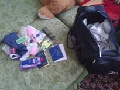
|
|
На вокзалах теперь стоят металлоискатели, вход по документам, и собачка
тебя обнюхивает. Всего-то прошло с момента первых взрывов… ... с 98 года.
И вот уже реакция милиции… сорри полиции. Саратовский вокзал порадовал
очередью на входе через единственный металлоискатель .Зато и проверка
была не формальная. Результат: алкашей и бомжей на вокзале нет. А вот в
Москве - увы. Тут и арки, и полиция. Только контраст с Саратовом грандиозный.
Всем на все, так сказать, с высокой колокольни. Наверно им просто надоело.
Интересно насколько в Саратове порядок сохраниться?
|
|
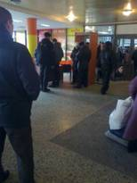
|
|
Теперь про поезда. Раньше поездка была приключением и испытанием. Летом
вагон прогревался до состояния сауны. А зимой можно было запросто быть
во сне засыпанным снегом. Чтобы утром нормально проснуться, нужна была
определенная процедура. Выглядело это так: застилаешь кровать, не снимая
шапки ложишься на спину, куртка тоже не снималась. Только руки доставались
из рукавов, застегиваешь и вот оно счастье!!! Импровизированный спальник
готов. Наружу один нос. Ну а туалет, типа сквозная дыра в полу – это отдельная
песня. Причем петь ее можно только на ходу. На остановках песня закрывалась
на ключ. Сейчас все намного скучнее. Новые вагоны… ;
|
|
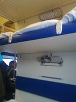
|
Не поленился, поглядел – из Твери. Чистенько, биотуалет. Вроде все не
плохо, но по ощущениям полочка поуже, а высота между нижней полкой и
верхней – меньше. И сидеть неудобно и лежать – рука свисает. Хоть снег не
метет по вагону. Зато конденсат всю ночь с крыши капает.
Метро – шикарный вид транспорта!!! Культура москвичей тут налицо. Входя
в дверь вестибюля метро надо быть предельно осторожным. Тот кто зашел перед
тобой, о тебе не думает. Вертушка обратным ходом легко может двинуть в нос.
Дверь НИКОГДА не придерживается (в отличие от питерского метро).
Зато на кольцевой – новые вагоны.
|
|
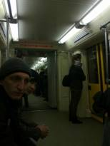
|
|
Утренние улицы субботней Москвы, как всегда радуют мусором и отсутствием
москвичей. Только редкие бабушки выгуливают различных животных. Утро субботы
– царство гастрбайтеров, пытающихся делать уборку, и приезжих, пытающихся ко
времени успеть найти незнакомое место в не знакомом городе.
|
|
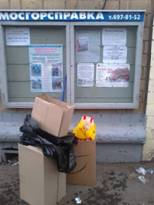
|
Кто не сумел разобрать надписи в стенде: слева «общественные работы – против
безработицы», справа предостережение «внимание терроризм» и «Москва - город
межнационального диалога». Шикарно!!!
Дальше зал на Шаболовке. Место проведения множества семинаров по айкидо.
Ну, что сказать? 3 года назад никто не верил, что на месте стадиона можно
в наглую, без учета общественного мнения, что-то построить. Общественное
мнение - это мнение тех, чье мнение никого не интересует. Привет Лужкову.
|
|
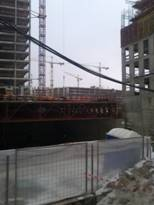
|
|
Соответственно и зал постепенно превращается. В общем превращается.
Стены обшарпанны, с потолка капает. Ясно, что на фоне ударной стройки
капиталистического труда он обречен. Жаль.
|
|
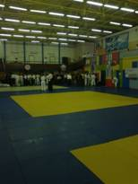
|
|
Собственно семинар Кристиана. Как любой его семинар – это всегда
интересно. Не понятно и крайне увлекательно.
|
|
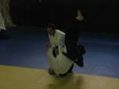
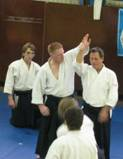
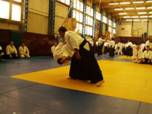
|
|
В любом случае ты видишь живого человека, которой не только «творит
чудеса» у тебя на глазах. Так он еще с помощью своих учеников, показывает
метод, как этого достигнуть. Таких учеников как Паскаль, Бруно, Миша… ну
может еще и я. Если думаешь, что можешь научиться - впитывай, практикуй,
исследуй!!! Так сказать методический ряд для того, кто готов.
|
|
Общие фото вешать не буду. У тех, что 10 летней давности, отвратительное
качество. Но если приглядеться к ним, или напрячь память, то совпадений
будет процентов 10. Иными словами из 200 человек марафон длиной в 10 лет
выдержали только 20… се ля ви. Если честно, то на мой взгляд семинар был
для них. Остальным тоже было интересно, иногда даже что то получалось. Как
сказал один из участников «так двигаться в 60 нельзя… так вообще двигаться
нельзя!! Но дома я посмотрю видео... и во всем разберусь». Конечно. Так и
будет. Наверное. Семинар для новичков- крайне поучительное мероприятие.
Чтоб после него глаза горели. От восторга и энтузиазма. Подержаться за
мастера- дорогого стоит... во всех смыслах.
|
А я для себя в очередной раз заметил, что техника айкидо в исполнении
Кристиана циклична во времени. Но не замкнута сама на себя, а развивается
по спирали. То есть вроде все тоже, что и 10, и 5 лет назад, но по-другому.
Более живо, что ли. Не статично. Не так что «икке» должно быть «их» и все…
и сейчас, и через 3 года, и вообще всегда. Центр там должен быть, средняя
линия. И прочее, прочее. Все это безусловно нужно. В конце концов, если
ты это умеешь делать – то вернуться к такому исполнению не проблема. Но
именно такое айкидо не интересно. Не то что бы плохо. А мне не интересно.
Делать одно и то же много лет тупо и скучно. Но и заниматься словоблудием
и поиском истины без твердой базы хотя бы уровня шодана - полная ерунда.
В финале фото с группой из Саратова
|
|
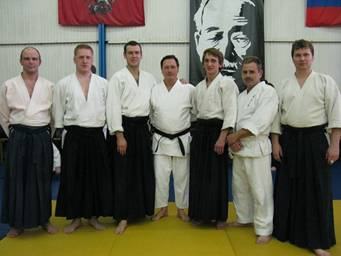
|
|
Ну, это тоже традиция. Тут невольно отвлекусь. Фото с сенсеем. Понятно
если принял участие в семинаре, то хочется и фото. Почему нет? Но вот
когда приезжал Паскаль в Саратов… Непонятные люди, из числа зрителей
фотографировались с ним. И группами и по одному. Очень забавно. Паскаль
очень удивлялся: «Кто эти люди? Что им от меня нужно?» Я, честно говоря,
не смог ответить внятно на эти вопросы.
|
|
Может открыть аттракцион? «Картонный сенсей». Хакакма, кимоно, а голову
время от времени менять. Кристиан, Эндо, да мало ли, хоть Кириенко!!! И
фотографируйся с кем хочешь! Ну да ладно.
|
|
В финале поездки в Москву всегда есть 3-4 часа перед поездом. И практически
всегда их можно провести в какой-нибудь кафешке, рядом с павелецким. Так
сказать попивая квас. Или кушая пирожное. Кому что нравиться.
|
|
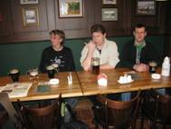
|
|
И уже перед отъездом – привет от Собянина, причем не приятный. Практически
все отъезды из Москвы, начиная с 98 года сопровождались покупкой чего либо
сьестного в дорогу. Либо курицы гриль, либо ребрышек. В ларечке слева от
павелецкого. Если стоять к вокзалу лицом. Кто уезжал с павелецкого неоднократно,
без сомнения поймет о чем я. И увы. Сковырнули ларечек. На его месте стоят
пластиковые платные сортиры. Крайне неравноценная замена. Ну да помер Ефим
и фиг с ним...
|
|
Снова поезд, снова вагон с капелью с потолка. Вот и ты родной Саратов!!!
После ,казалось бы грязной Москвы, ты кажешься еще грязнее. Ну и конечно
здесь тоже никто не уступит место в автобусе. Одно слово - Родина. А в
голове мысли о том, как не заметно и без вреда вплести то, что было на
семинаре в ежедневные тренировки.
|